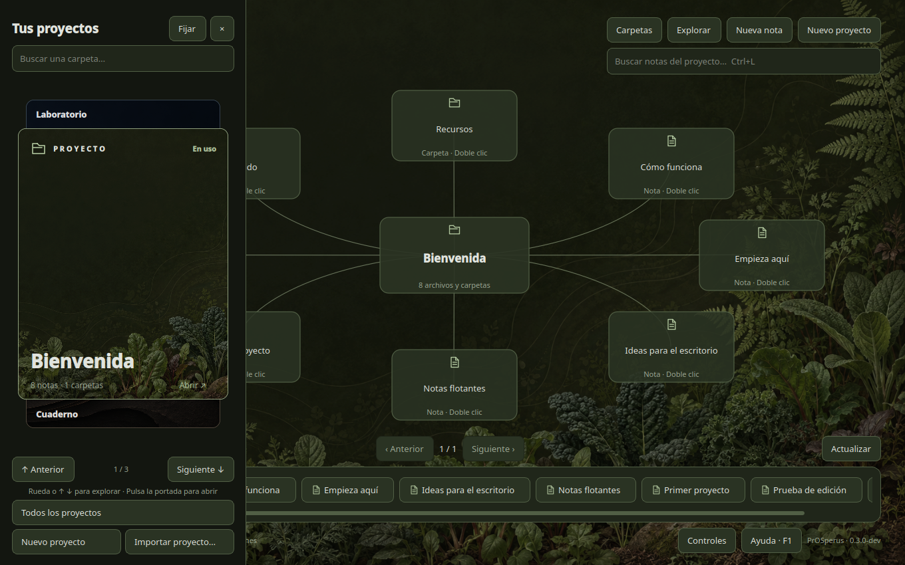

Proyecto propio · v0.5 en desarrollo · Software libre (GPLv3)PrOSperus
PrOSperus
desktop
Mi propia distribución Linux.
Un escritorio organizado por proyectos.
Basada en Debian 13, con un escritorio propio en Python y Qt sobre Sway. Cada carpeta es un escritorio: un mapa con sus notas y subcarpetas, notas flotantes en Markdown, búsqueda por contenido y ventanas que se reparten solas en espiral de Fibonacci. Se arranca desde una ISO Live que incluye instalador para arranque dual.
Probado en máquinas virtuales y en mi portátil; todavía no está listo para uso diario.
PythonQtSwayDebian 13BashGit
Ver el código en GitHub
Captura real del escritorio PrOSperus: tarjetero de proyectos y mapa de notas.